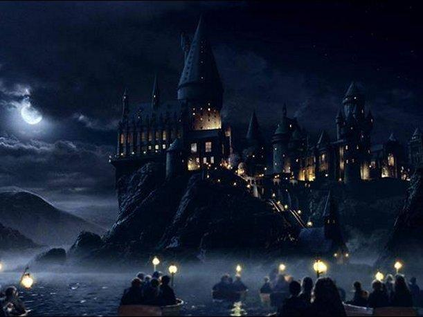
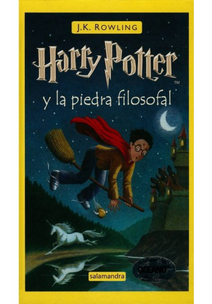
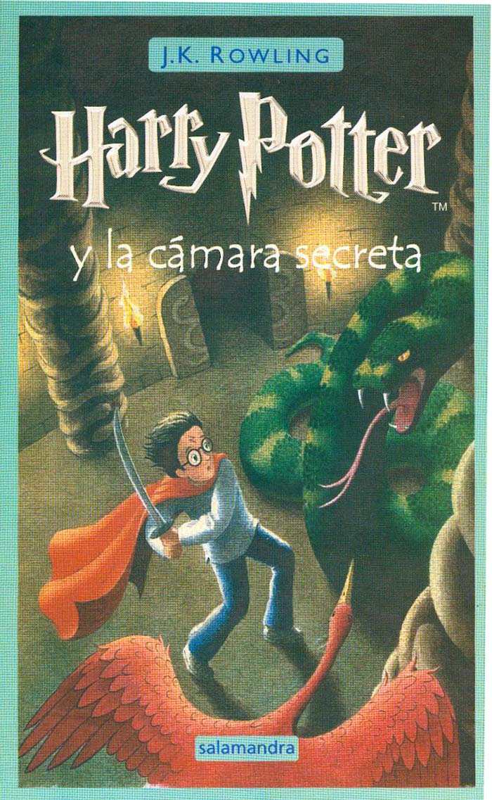
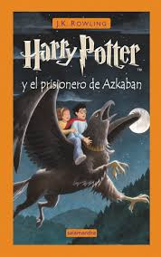
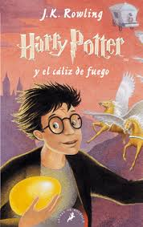
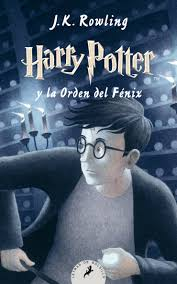
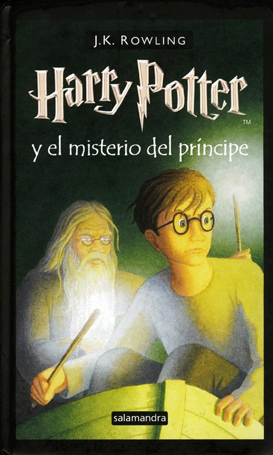
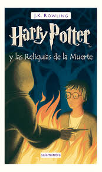

La saga de libros de Harry Potter consta de 7 novelas escritas por la autora J.K. Rowling. Ademas, ella escribio tres libros adicionales para recaudar fondos a favor de la Fundacion Comic Relief. Tambien escribio una precuela de Harry Potter que fue subastada.
Mas informacion sobre libros Complementarios...
Mas informacion sobre libro Adicional...
Libros de la Saga

Harry Potter y la Piedra Filosofal
Es el primer libro publicado de la saga de Harry Potter. Fue publicado por la editorial Bloomsbury en Julio del 2000 bajo el nombre de Harry Potter and the Philosophers Stone. La version en español tiene 254 paginas, siendo el libro mas corto de la serie. Ha sido traducido a mas de 60 idiomas y es uno de los libros mas vendidos de la historia.

Harry Potter y la camara de los secretos
Es el segundo libro de la serie. Fue publicado originalmente en 1998 por la editorial Bloomsbury. La edicion en castellano tiene 286 paginas.

Harry Potter y el Prisionero de Azkaban
Es el tercer libro escrito de la saga de Harry Potter. Fue publicado por Bloomsbury el 8 de Julio de 1999 bajo el nombre de Harry Potter and the Prisoner of Azkaban. La ediciOn en castellano tiene 254 paginas.

Harry Potter y el Caliz de Fuego
Es el cuarto libro publicado de la saga de Harry Potter. Fue publicado por Bloomsbury en Julio de 1997 bajo el nombre de Harry Potter and the Goblet of Fire.

Harry Potter y la Orden del Fenix
Es el quinto libro publicado de la saga de Harry Potter. Fue publicado por Bloomsbury en Junio del 2003 bajo el nombre de Harry Potter and the Order of the Phoenix. La version en español tiene 893 paginas, siendo el libro mas largo de la serie.

Harry Potter y el Misterio del Principe
Es el sexto libro publicado de la saga de Harry Potter. Fue publicado por Bloomsbury en Julio del 2005 bajo el nombre de Harry Potter and the Half Blood Prince. La version en español tiene 602 paginas.

Harry Potter y las Reliquias de la Muerte
Es el septimo y ultimo libro de la saga de Harry Potter.Harry Potter y las Reliquias de la Muerte fue puesto a la venta el pasado 21 de Febrero 2008 a las 18:30 en España, America Latina y Estados Unidos (al mismo tiempo).